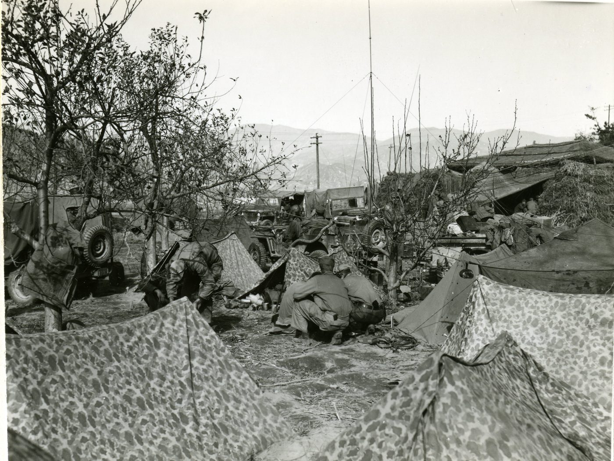
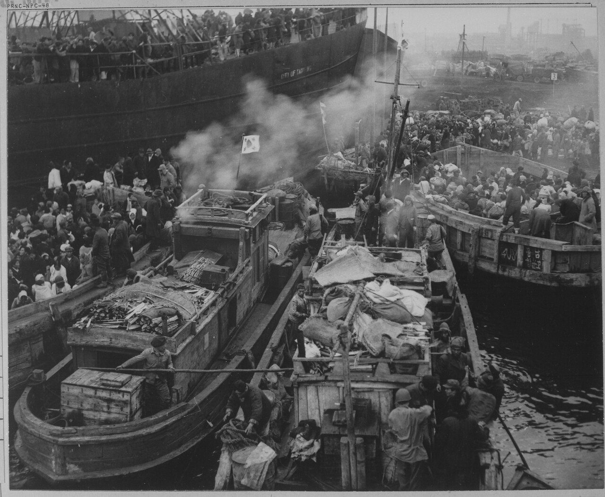

한국어 한 문장으로 무엇을 찾을 수 있는지, 실제 응답 그대로 보여 드립니다. 이 페이지와 카드뉴스를 어떻게 만들었는지, 여러분이 어떻게 활용하면 좋은지도 함께 담았습니다.
장진호 기록 찾아줘. 미국 국립기록관리청과 6·25전쟁 아카이브센터에서· 두 기관의 제목(한국어·영어)
· 원본 번호 NAID 24033과 사본 번호
· 원본의 소속 분류: RG 111 › Moving Images Relating to Military Activities
· 원본 영상 파일 주소
NAID 276537577 사진 써도 되는지 확인해줘
흥남 철수 피란민 사진 원본 찾아줘 NARA 520782
NAID 22015 앞뒤 2개씩 훑어줘같은 묶음의 기록도 제목은 제각각입니다("WAR-LOADING LSTs, KOBE", "RALLY OF S KOREAN POLITICAL PARTY"). 검색어 하나로는 다 걸리지 않지만, 번호로 훑으면 빠짐없이 나옵니다.
안중근 의거 당시 신문 기사 찾아줘· "이 기사 색인어랑 관련 기사 보여줘"
· "본문에서 단지동맹 찾아줘" — 신문 원문 검색과 연도별 분포
· "각주 형식으로 써줘" — 인용 형식 정리
인물·판결문·신문 원문·해외 문서고·고문헌·국가유산·국제기구·원문 변경 감지까지. 카드를 누르면 인스타그램용 원본 이미지가 열립니다.
홍보물도 이 도구로 만들었습니다. 과정 자체가 도구의 사용법입니다.
한국어 한 문장으로 30곳을 동시에 검색했습니다. 예: "장진호" → 미국 국립기록관리청과 6·25전쟁 아카이브센터에서 9건.
사본에 적힌 원본 번호로 미국 국립기록관리청 목록을 직접 조회해, 원본이 실제로 있는지 확인했습니다. 결과에 "원본확인"으로 남습니다.
사진마다 권리를 실조회했습니다. 이용 제한이 없는 A등급 사진 2장(NAID 520782·276537577)만 싣고, 제한 표기가 있는 영상(C등급)은 장면을 쓰지 않고 제목만 인용했습니다.
카드뉴스 10장을 만들고 한 장씩 눈으로 검수했습니다(사진이 가려진 도장 위치 1곳 수정). 카드마다 출처를 적고, 이미지별 출처 대장을 함께 공개합니다.
해외 문서고까지 1차 사료를 찾고, 신문 기사는 면·단까지 각주로 씁니다. 결과는 표(CSV)로 받아 분석합니다.
전시·콘텐츠에 쓸 실물의 원본 위치와 권리 등급을 먼저 확인합니다.
주제 하나로 수업용 보고서·카드뉴스·발표 자료를 한 번에 만듭니다.
인터넷에 떠도는 사진의 원본과 촬영일, 출처를 확인합니다.
언제·어디서·어떤 검색어로 찾았는지 적힌 수집 기록서로 발굴 과정을 그대로 남깁니다.
우리 동네 옛 모습, 가족이 겪은 전쟁을 직접 찾아봅니다.
1080×1080 정사각형입니다. 글보다 원본 사진으로 보여 주도록 만들었습니다 — 미국 국립기록관리청·호주 전쟁기념관·국립중앙도서관 등 권리를 확인한 실물 사진 26장. 이미지를 눌러 크게 보거나 내려받을 수 있습니다.
주소 하나를 등록하고 "창기창기 도와줘"라고 말하면 시작입니다.